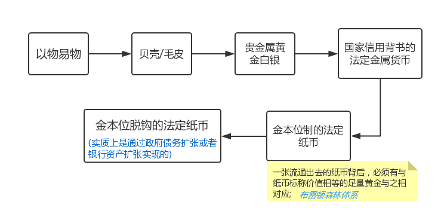

<!DOCTYPE html>
<html>
<head>
<title>huobi.md</title>
<meta http-equiv="Content-type" content="text/html;charset=UTF-8">

<style>
/*---------------------------------------------------------------------------------------------
 *  Copyright (c) Microsoft Corporation. All rights reserved.
 *  Licensed under the MIT License. See License.txt in the project root for license information.
 *--------------------------------------------------------------------------------------------*/

body {
	font-family: "Segoe WPC", "Segoe UI", "SFUIText-Light", "HelveticaNeue-Light", sans-serif, "Droid Sans Fallback";
	font-size: 14px;
	padding: 0 12px;
	line-height: 22px;
	word-wrap: break-word;
}

#code-csp-warning {
	position: fixed;
	top: 0;
	right: 0;
	color: white;
	margin: 16px;
	text-align: center;
	font-size: 12px;
	font-family: sans-serif;
	background-color:#444444;
	cursor: pointer;
	padding: 6px;
	box-shadow: 1px 1px 1px rgba(0,0,0,.25);
}

#code-csp-warning:hover {
	text-decoration: none;
	background-color:#007acc;
	box-shadow: 2px 2px 2px rgba(0,0,0,.25);
}


body.scrollBeyondLastLine {
	margin-bottom: calc(100vh - 22px);
}

body.showEditorSelection .code-line {
	position: relative;
}

body.showEditorSelection .code-active-line:before,
body.showEditorSelection .code-line:hover:before {
	content: "";
	display: block;
	position: absolute;
	top: 0;
	left: -12px;
	height: 100%;
}

body.showEditorSelection li.code-active-line:before,
body.showEditorSelection li.code-line:hover:before {
	left: -30px;
}

.vscode-light.showEditorSelection .code-active-line:before {
	border-left: 3px solid rgba(0, 0, 0, 0.15);
}

.vscode-light.showEditorSelection .code-line:hover:before {
	border-left: 3px solid rgba(0, 0, 0, 0.40);
}

.vscode-dark.showEditorSelection .code-active-line:before {
	border-left: 3px solid rgba(255, 255, 255, 0.4);
}

.vscode-dark.showEditorSelection .code-line:hover:before {
	border-left: 3px solid rgba(255, 255, 255, 0.60);
}

.vscode-high-contrast.showEditorSelection .code-active-line:before {
	border-left: 3px solid rgba(255, 160, 0, 0.7);
}

.vscode-high-contrast.showEditorSelection .code-line:hover:before {
	border-left: 3px solid rgba(255, 160, 0, 1);
}

img {
	max-width: 100%;
	max-height: 100%;
}

a {
	color: #4080D0;
	text-decoration: none;
}

a:focus,
input:focus,
select:focus,
textarea:focus {
	outline: 1px solid -webkit-focus-ring-color;
	outline-offset: -1px;
}

hr {
	border: 0;
	height: 2px;
	border-bottom: 2px solid;
}

h1 {
	padding-bottom: 0.3em;
	line-height: 1.2;
	border-bottom-width: 1px;
	border-bottom-style: solid;
}

h1, h2, h3 {
	font-weight: normal;
}

h1 code,
h2 code,
h3 code,
h4 code,
h5 code,
h6 code {
	font-size: inherit;
	line-height: auto;
}

a:hover {
	color: #4080D0;
	text-decoration: underline;
}

table {
	border-collapse: collapse;
}

table > thead > tr > th {
	text-align: left;
	border-bottom: 1px solid;
}

table > thead > tr > th,
table > thead > tr > td,
table > tbody > tr > th,
table > tbody > tr > td {
	padding: 5px 10px;
}

table > tbody > tr + tr > td {
	border-top: 1px solid;
}

blockquote {
	margin: 0 7px 0 5px;
	padding: 0 16px 0 10px;
	border-left: 5px solid;
}

code {
	font-family: Menlo, Monaco, Consolas, "Droid Sans Mono", "Courier New", monospace, "Droid Sans Fallback";
	font-size: 14px;
	line-height: 19px;
}

body.wordWrap pre {
	white-space: pre-wrap;
}

.mac code {
	font-size: 12px;
	line-height: 18px;
}

pre:not(.hljs),
pre.hljs code > div {
	padding: 16px;
	border-radius: 3px;
	overflow: auto;
}

/** Theming */

.vscode-light,
.vscode-light pre code {
	color: rgb(30, 30, 30);
}

.vscode-dark,
.vscode-dark pre code {
	color: #DDD;
}

.vscode-high-contrast,
.vscode-high-contrast pre code {
	color: white;
}

.vscode-light code {
	color: #A31515;
}

.vscode-dark code {
	color: #D7BA7D;
}

.vscode-light pre:not(.hljs),
.vscode-light code > div {
	background-color: rgba(220, 220, 220, 0.4);
}

.vscode-dark pre:not(.hljs),
.vscode-dark code > div {
	background-color: rgba(10, 10, 10, 0.4);
}

.vscode-high-contrast pre:not(.hljs),
.vscode-high-contrast code > div {
	background-color: rgb(0, 0, 0);
}

.vscode-high-contrast h1 {
	border-color: rgb(0, 0, 0);
}

.vscode-light table > thead > tr > th {
	border-color: rgba(0, 0, 0, 0.69);
}

.vscode-dark table > thead > tr > th {
	border-color: rgba(255, 255, 255, 0.69);
}

.vscode-light h1,
.vscode-light hr,
.vscode-light table > tbody > tr + tr > td {
	border-color: rgba(0, 0, 0, 0.18);
}

.vscode-dark h1,
.vscode-dark hr,
.vscode-dark table > tbody > tr + tr > td {
	border-color: rgba(255, 255, 255, 0.18);
}

.vscode-light blockquote,
.vscode-dark blockquote {
	background: rgba(127, 127, 127, 0.1);
	border-color: rgba(0, 122, 204, 0.5);
}

.vscode-high-contrast blockquote {
	background: transparent;
	border-color: #fff;
}
</style>
<link rel="stylesheet" href="file:///Users/jyg/Desktop/gitHub/currency/vscode-markdown.css" type="text/css">
<style>
/* Tomorrow Theme */
/* http://jmblog.github.com/color-themes-for-google-code-highlightjs */
/* Original theme - https://github.com/chriskempson/tomorrow-theme */

/* Tomorrow Comment */
.hljs-comment,
.hljs-quote {
	color: #8e908c;
}

/* Tomorrow Red */
.hljs-variable,
.hljs-template-variable,
.hljs-tag,
.hljs-name,
.hljs-selector-id,
.hljs-selector-class,
.hljs-regexp,
.hljs-deletion {
	color: #c82829;
}

/* Tomorrow Orange */
.hljs-number,
.hljs-built_in,
.hljs-builtin-name,
.hljs-literal,
.hljs-type,
.hljs-params,
.hljs-meta,
.hljs-link {
	color: #f5871f;
}

/* Tomorrow Yellow */
.hljs-attribute {
	color: #eab700;
}

/* Tomorrow Green */
.hljs-string,
.hljs-symbol,
.hljs-bullet,
.hljs-addition {
	color: #718c00;
}

/* Tomorrow Blue */
.hljs-title,
.hljs-section {
	color: #4271ae;
}

/* Tomorrow Purple */
.hljs-keyword,
.hljs-selector-tag {
	color: #8959a8;
}

.hljs {
	display: block;
	overflow-x: auto;
	color: #4d4d4c;
	padding: 0.5em;
}

.hljs-emphasis {
	font-style: italic;
}

.hljs-strong {
	font-weight: bold;
}
</style>

<style>
/*
 * Markdown PDF CSS
 */

 body {
	font-family:  "Meiryo", "Segoe WPC", "Segoe UI", "SFUIText-Light", "HelveticaNeue-Light", sans-serif, "Droid Sans Fallback";
}

pre {
	background-color: #f8f8f8;
	border: 1px solid #cccccc;
	border-radius: 3px;
	overflow-x: auto;
	white-space: pre-wrap;
	overflow-wrap: break-word;
}

pre:not(.hljs) {
	padding: 23px;
	line-height: 19px;
}

blockquote {
	background: rgba(127, 127, 127, 0.1);
	border-color: rgba(0, 122, 204, 0.5);
}

.emoji {
	height: 1.4em;
}

/* for inline code */
:not(pre):not(.hljs) > code {
	color: #C9AE75; /* Change the old color so it seems less like an error */
	font-size: inherit;
}

/* Page Break : use <div class="page"/> to insert page break
-------------------------------------------------------- */
.page {
	page-break-after: always;
}

</style>

</head>
<body>
<h1 id="%E8%B4%A7%E5%B8%81">货币</h1>
<!-- TOC -->
<ul>
<li><a href="#%E8%B4%A7%E5%B8%81">货币</a>
<ul>
<li><a href="#1-%E8%B4%A7%E5%B8%81%E7%9A%84%E6%9C%AC%E8%B4%A8">1. 货币的本质</a></li>
<li><a href="#2-%E8%B4%A7%E5%B8%81%E7%9A%84%E5%8F%91%E5%B1%95%E8%BF%87%E7%A8%8B">2. 货币的发展过程</a>
<ul>
<li><a href="#21-%E7%8E%B0%E4%BB%A3%E4%BF%A1%E7%94%A8%E8%B4%A7%E5%B8%81%E7%9A%84%E4%BA%A7%E7%94%9F">2.1 现代信用货币的产生</a>
<ul>
<li><a href="#211-%E5%A4%8D%E5%BC%8F%E8%AE%B0%E8%B4%A6%E6%B3%95">2.1.1 复式记账法</a></li>
<li><a href="#212-%E5%95%86%E4%B8%9A%E9%93%B6%E8%A1%8C%E8%B4%A7%E5%B8%81%E6%B4%BE%E7%94%9F">2.1.2 商业银行货币派生</a></li>
<li><a href="#213-%E8%B4%A7%E5%B8%81%E6%B5%81%E5%8A%A8%E6%80%A7">2.1.3 货币流动性</a></li>
<li><a href="#214-%E8%B4%A7%E5%B8%81%E6%94%BF%E7%AD%96%E5%B7%A5%E5%85%B7">2.1.4 货币政策工具</a></li>
</ul>
</li>
</ul>
</li>
</ul>
</li>
</ul>
<!-- /TOC -->
<h2 id="1-%E8%B4%A7%E5%B8%81%E7%9A%84%E6%9C%AC%E8%B4%A8">1. 货币的本质</h2>
<ul>
<li>货币的本质:固定充当一般等价物的特殊商品.</li>
<li>货币的功能:充当交易媒介，进行价值度量, 储值工具.</li>
</ul>
<h2 id="2-%E8%B4%A7%E5%B8%81%E7%9A%84%E5%8F%91%E5%B1%95%E8%BF%87%E7%A8%8B">2. 货币的发展过程</h2>
<p></p>
<p>注:<a href="https://zh.wikipedia.org/zh/%E5%B8%83%E9%9B%B7%E9%A1%BF%E6%A3%AE%E6%9E%97%E4%BD%93%E7%B3%BB">布雷顿深林体系</a></p>
<h3 id="21-%E7%8E%B0%E4%BB%A3%E4%BF%A1%E7%94%A8%E8%B4%A7%E5%B8%81%E7%9A%84%E4%BA%A7%E7%94%9F">2.1 现代信用货币的产生</h3>
<h4 id="211-%E5%A4%8D%E5%BC%8F%E8%AE%B0%E8%B4%A6%E6%B3%95">2.1.1 复式记账法</h4>
<p><font color=rgb(255,105,0) size=3>Asset（资产）= Liability（负债）+ Equity（股东权益）</font></p>
<p>简单例子:</p>
<ol>
<li>
<p>老王用100万人民币，创建公司A</p>
<p>公司现金资产增加100万;</p>
<p>所有者权益增加100万;</p>
</li>
<li>
<p>公司A购买了5万元的服务器</p>
<p>Asset中的现金减少5W;</p>
<p>Asset中的固定资产增加5W;</p>
</li>
<li>
<p>公司A向XX购买了5万元的服务器,打的借条没给现金</p>
<p>Asset中的现金不变;</p>
<p>Asset中的固定资产增加5万;</p>
<p>Liability（负债）增加了5万;</p>
</li>
</ol>
<h4 id="212-%E5%95%86%E4%B8%9A%E9%93%B6%E8%A1%8C%E8%B4%A7%E5%B8%81%E6%B4%BE%E7%94%9F">2.1.2 商业银行货币派生</h4>
<blockquote>
<p>中国目前的银行体制采用的是从1984年后开始实行的央行与商业银行两级银行体制。央行指的是中国人民银行，它位于整个金融体系的中心，负责制定和实施货币政策、对金融进行监督管理，央行是国家机关，同时它也是银行的银行，就是央行能够向商业银行贷款，同时商业银行能够向央行存款；商业银行是企业，一种只和钱打交道的特殊企业，通过存款、贷款、汇兑、储蓄等方式开展信用中介的企业，它在业务上受央行的监督和管理。既然是企业就有所有制差别，所以商业银行又分为五大国有银行（工行、农行、中行、建行、交行），若干股份制银行（中兴、招商、浦发、民生等），少量民营银行（北京银行、南京银行、宁波银行等).</p>
</blockquote>
<p><font color=#008000>先有存款再有贷款?</font></p>
<p>简化模型:<br>
假设全国只有两家银行，一个央行，一个商业银行A。为便于计算，假定央行规定商业银行的存款准备金率为20%。</p>
<p>1.央行存入100万元到A银行<br>
对银行而言，存款相当于银行从别人那里借了一笔钱暂时存在银行这里，银行是债务人，说明客户存款在银行这里是债务的一种，因此存款应该记录在负债端。这时，右侧负债端记账“存款100万元”。按照复式记账原则，左侧资产端同时发生变化，银行因为客户存款进来，资产发生了变化，一方面要向央行上交存款准备金，另一方面剩下的钱作为银行的超额准备金随时可以放贷。所以资产栏记账为“法定存款准备金20万元（100*0.2=20）”，“超额准备金80万元（100-20=80）”.</p>
<table width="460">
    <h5>A银行资产负债表(单位:万元)</h5>
        <tr>
            <th width="230" align="left" colspan="2">资产(贷)</th>
            <th width="230" align="left" colspan="2">负债(借)</th>
        </tr>
        <tr>
            <th align="left">超额准备金</th>
            <th align="right">80</th>
            <th align="left">存款</th>
            <th align="right">100</th>
        </tr>
        <tr>
            <th align="left">存款准备金</th>
            <th align="right">20</th>
            <th align="left"></th>
            <th align="right"></th>
        </tr>
        <tr>
            <th align="left">总计</th>
            <th align="right">100</th>
            <th align="left">总计</th>
            <th align="right">100</th>
        </tr>
    </table>
<p>2.A银行第一次向客户发放贷款80万<br>
对银行而言，贷款是银行给别人借钱，自己是债权人，而债权属于资产的一种，因此贷款应该记录在资产端。这时，左侧资产端记账“贷款80万元”。按照复式记账原则，右侧存款派生增加80万。注意!这里是关键，因为贷款增加，资产总量增加，对应负债也要增加，表现在派生出等额的存款。所以商业银行通过发放贷款来派生存款是货币创造的最为传统的方式。当贷款发生时，由于贷款不会被立即取现，就相当于贷款人将贷到的钱存在了自己银行的账户里，所以贷款产生的同时，就相当于存款同步等额产生。于是，存款变为180万（100+80=180），存款准备金变为36万（180*0.2=36），因此超额准备金变为64万（180-80-36=64）。</p>
<table width="460">
    <h5>A银行资产负债表(单位:万元)</h5>
        <tr>
            <th width="230" align="left" colspan="2">资产(贷)</th>
            <th width="230" align="left" colspan="2">负债(借)</th>
        </tr>
        <tr>
            <th align="left">贷款</th>
            <th align="right">80</th>
            <th align="left" valign="top" rowspan="3">存款</th>
            <th align="right" valign="top"  rowspan="3">100+80</th>
        </tr>
        <tr>
            <th align="left">超额准备金</th>
            <th align="right">64</th>
        </tr>
        <tr>
            <th align="left">存款准备金</th>
            <th align="right">36</th>
        </tr>
        <tr>
            <th align="left">总计</th>
            <th align="right">180</th>
            <th align="left">总计</th>
            <th align="right">180</th>
        </tr>
    </table>
<p>3.A银行第二次向客户发放贷款80万<br>
资产端贷款变为144万（80+64=144），与此同时，负债端的存款增加变为244万（180+64=244），因为存款增加，所以存款准备金变为48.8（244*0.2=48.8），那么超额准备金就剩下51.2万（244-144-48.8=51.2）。</p>
<table width="460">
    <h5>A银行资产负债表(单位:万元)</h5>
        <tr>
            <th width="230" align="left" colspan="2">资产(贷)</th>
            <th width="230" align="left" colspan="2">负债(借)</th>
        </tr>
        <tr>
            <th align="left">贷款</th>
            <th align="right">80+64=144</th>
            <th align="left" valign="top" rowspan="3">存款</th>
            <th align="right" valign="top"  rowspan="3">100+80+64</th>
        </tr>
        <tr>
            <th align="left">超额准备金</th>
            <th align="right">51.2</th>
        </tr>
        <tr>
            <th align="left">存款准备金</th>
            <th align="right">48.8</th>
        </tr>
        <tr>
            <th align="left">总计</th>
            <th align="right">224</th>
            <th align="left">总计</th>
            <th align="right">224</th>
        </tr>
    </table>
...  
<p>资产和负债端的总金额达到最大值，这个值恰好等于初始存款的(1/r)倍,r=存款准备金率.</p>
<hr>
<p><a href="https://baike.baidu.com/item/%E9%93%B6%E8%A1%8C%E6%8C%A4%E5%85%91">银行挤兑</a>:大量的银行客户因为金融危机的恐慌或者相关影响同时到银行提取现金，而银行的储备不足以支付，所出现的情况就叫银行挤兑。</p>
<h4 id="213-%E8%B4%A7%E5%B8%81%E6%B5%81%E5%8A%A8%E6%80%A7">2.1.3 货币流动性</h4>
<p>  <font clolr=blue size=3><strong>“货币流动性”是指M1/M2，反映的是货币在市场上的投放量。</strong></font></p>
<p>  M0、M1、M2是货币供应量的范畴。我国现阶段也是将货币供应量划分为三个层次，其含义分别是：</p>
<blockquote>
<p>M0：流通中现金，即在银行体系以外流通的现金；</p>
</blockquote>
<blockquote>
<p>M1：狭义货币供应量，即M0+企事业单位活期存款；</p>
</blockquote>
<blockquote>
<p>M2：广义货币供应量，即M1+企事业单位定期存款+居民储蓄存款。</p>
</blockquote>
<p>在这三个层次中，M0与消费变动密切相关，是最活跃的货币；
M1反映居民和企业资金松紧变化，是经济周期波动的先行指标，流动性仅次于M0；
M2流动性偏弱，但反映的是社会总需求的变化和未来通货膨胀的压力状况，通常所说的货币供应量，主要指M2。</p>
<ul>
<li><em>货币流动性过剩</em>: 指货币数量远远超出货币需求，过多的货币追逐较少的商品，同时在货币数量剧增状况下，货币资金为追求高额利润必然脱离实际生产体系，疯狂操作大宗商品。</li>
<li><em>货币流动性紧缩</em>: 指由于外生的货币供给低于内生的货币需求，
导致有支付能力的消费需求和投资需求不足，经济增长率偏低，社会生产低于生产
可能性边界的现象及其内在规律。</li>
</ul>
<p><em>参考</em>:
[<a href="https://baike.baidu.com/item/%E8%B4%A7%E5%B8%81%E6%B5%81%E5%8A%A8%E6%80%A7">百度百科.货币流动性</a>]
[<a href="https://wiki.mbalib.com/wiki/%E8%B4%A7%E5%B8%81%E6%B5%81%E5%8A%A8%E6%80%A7">MBA.wiki货币流动性</a>]</p>
<h4 id="214-%E8%B4%A7%E5%B8%81%E6%94%BF%E7%AD%96%E5%B7%A5%E5%85%B7">2.1.4 货币政策工具</h4>
<ul>
<li>
<p>1.公开市场业务：中央银行公开买卖债券等的业务活动，1999年以来，公开市场操作已成为中国人民银行货币政策日常操作的重要工具，对于调控货币供应量、调节商业银行流动性水平、引导货币市场利率走势发挥了积极的作用。</p>
</li>
<li>
<p>2.存款准备金： 通过调整存款准备金率，影响金融机构的信贷资金供应能力，从而间接调控货币供应量。</p>
</li>
<li>
<p>3.中央银行贷款：运用再贷款政策、再贴现政策调剂金融机构的信贷资金需求，影响金融机构的信贷资金供应能力。</p>
</li>
<li>
<p>4.利率政策：根据货币政策实施的需要，适时的运用利率工具，对利率水平和利率结构进行调整，进而影响社会资金供求状况，实现货币政策的既定目标。</p>
</li>
<li>
<p>5.汇率政策：通过汇率变动影响国际贸易，平衡国际收支。</p>
</li>
</ul>
<p><em>参考</em>:[https://wiki.mbalib.com/wiki/%E8%B4%A7%E5%B8%81%E6%94%BF%E7%AD%96%E5%B7%A5%E5%85%B7]</p>
<p><font color=brong size=3>*公开市场操作:</font><br>
从交易品种看，中国人民银行公开市场业务债券交易主要包括<strong>回购交易、现券交易和发行中央银行票据</strong>三种。</p>
<ul>
<li>(1)、回购交易<br>
回购交易分为<strong>正回购</strong>和<strong>逆回购两种</strong>，正回购为中国人民银行向一级交易商卖出有价证券，并约定在未来特定日期买回有价证券的交易行为，正回购为央行从市场收回流动性的操作，正回购到期则为央行向市场投放流动性的操作；逆回购为中国人民银行向一级交易商购买有价证券，并约定在未来特定日期将有价证券卖给一级交易商的交易行为，逆回购为央行向市场上投放流动性的操作，逆回购到期则为央行从市场收回流动性的操作。</li>
<li>（2）、现券交易<br>
现券交易分为现券买断和现券卖断两种，前者为央行直接从二级市场买入债券，一次性地投放基础货币；后者为央行直接卖出持有债券，一次性地回笼基础货币。</li>
<li>（3）、中央银行票据<br>
中央银行票据(Central Bank Bill)是中央银行为调节商业银行超额准备金而向商业银行发行的短期债务凭证，其实质是中央银行债券，之所以叫“中央银行票据”，是为了突出其短期性特点，其发行的对象是公开市场业务一级交易商，作用主要是为市场提供基准利率，以及推动货币市场的发展。中央银行票据即中国人民银行发行的短期债券，央行通过发行央行票据可以回笼基础货币，央行票据到期则体现为投放基础货币。</li>
</ul>
<p>SLO、SLF、MLF、PSL</p>
<ul>
<li>
<p>(1)、SLO(Short-term Liquidity Operations）短期流动性调节工具<br>
SLO简单说就是<strong>超短期的逆回购</strong>。央行2014年引入，以7天期以内短期回购为主，遇节假日可适当延长操作期限，采用市场化利率招标方式开展操作。人民银行根据货币调控需要，综合考虑银行体系流动性供求状况、货币市场利率水平等多种因素，灵活决定该工具的操作时机、操作规模及期限品种等。</p>
</li>
<li>
<p>(2)、SLF（Standing Lending Facility）常备借贷便利<br>
央行于2013年初创设了常备借贷便利。主要功能是满足金融机构期限较长的大额流动性需求。对象主要为政策性银行和全国性商业银行。期限为1-3个月。利率水平根据货币政策调控、引导市场利率的需要等综合确定。常备借贷便利以抵押方式发放，合格抵押品包括高信用评级的债券类资产及优质信贷资产等。<br>
主要特点：<br>
一是由金融机构主动发起，金融机构可根据自身流动性需求申请常备借贷便利；<br>
二是常备借贷便利是中央银行与金融机构“一对一”交易，针对性强；<br>
三是常备借贷便利的交易对手覆盖面广，通常覆盖存款金融机构。</p>
</li>
<li>
<p>(3)、MLF（Medium-term Lending Facility）中期借贷便利<br>
2014年9月由中国人民银行创设，发放对象与SLF一致，与SLF最大的区别就是期限长，一般是3个月、6个月、一年。而且，央行要求金融机构把通过MLF申请来的贷款资金投放到“三农”和小微企业上。</p>
</li>
<li>
<p>(4)、PSL（Pledged Supplementary Lending）抵押补充贷款<br>
央行2014年研究创立了PSL。PSL是基础货币投放的新渠道，商业银行通过抵押资产从央行获得融资。PSL这一工具和再贷款非常类似，再贷款是一种无抵押的信用贷款，不过市场往往将再贷款赋予某种金融稳定含义，即一家机构出了问题才会被投放再贷款。截至目前，央行仅对国家开发银行、中国农业发展银行和中国进出口银行进行过PSL操作。央行通过PSL为这些银行提供一部分低成本资金，引导投入到盈利能力弱、或有政府担保但商业定价不能满足的基础设施和民生支出等领域，可以起到降低这部分社会融资成本的作用。<br>
</p>
<p><em>参考</em>:<br>
[http://news-back.idbhost.com/news/upload/2016/08/26/htbi6es3r4.htm];<br>
[http://fund.eastmoney.com/news/1847,20171221814773142.html];</p>
</li>
</ul>
<p>End</p>

</body>
</html>
